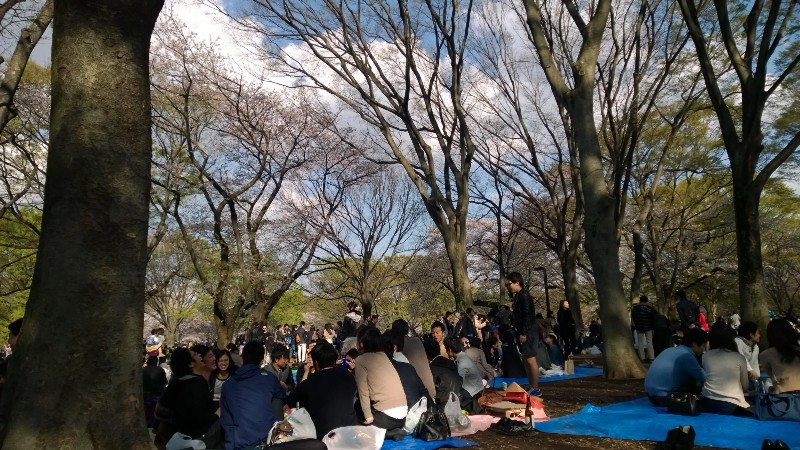
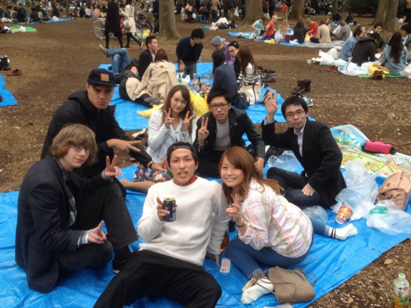
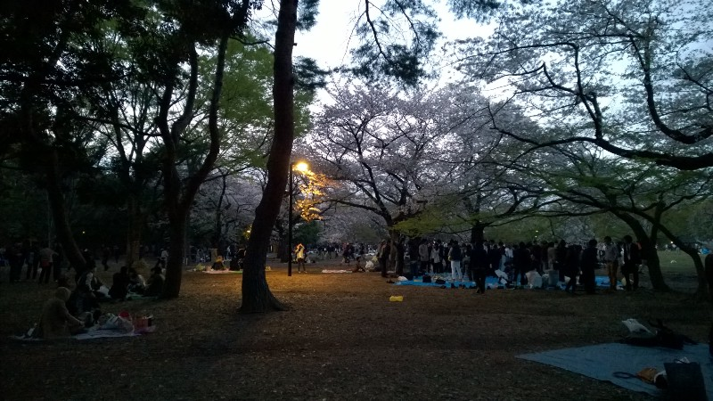
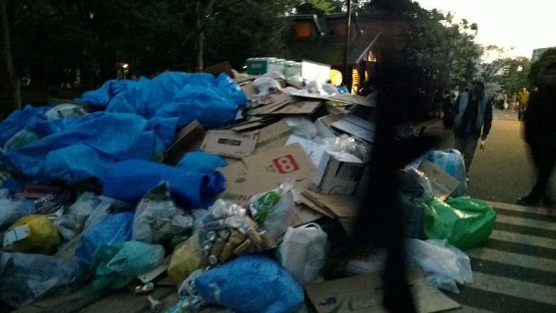
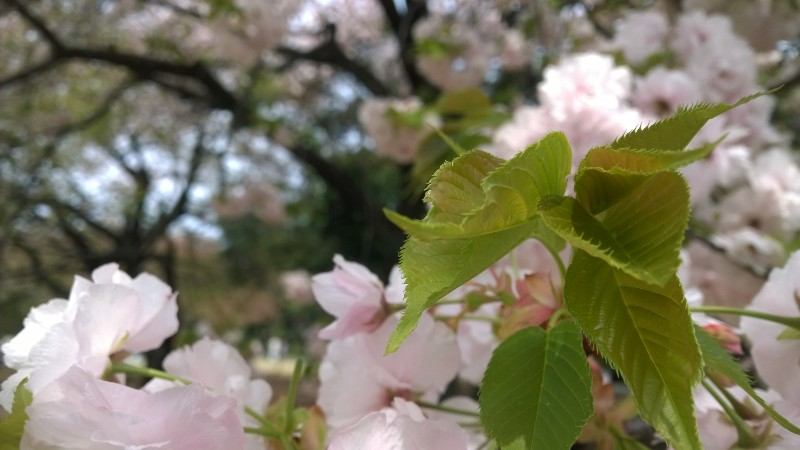
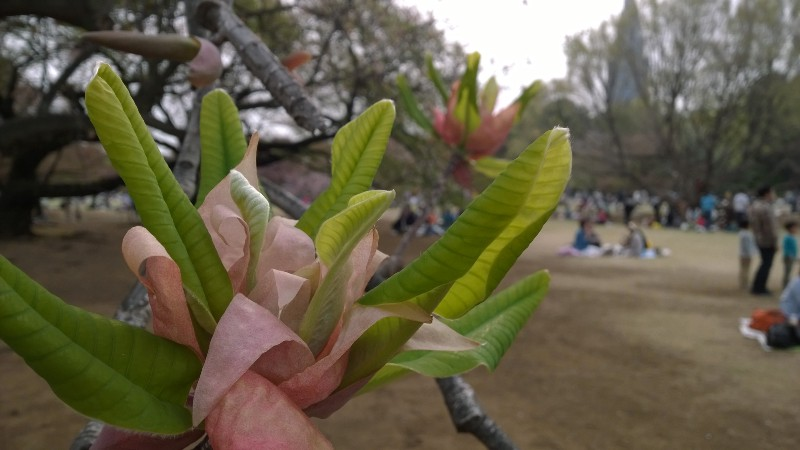
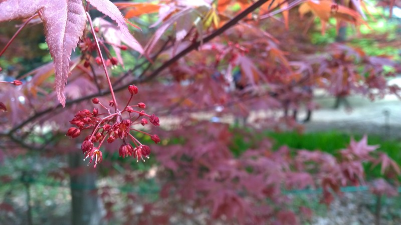

Hanami shiyou!
Let’s go look at cherry blossom
It is an ancient and honourable Japanese tradition to drink sake while sitting under blossoming cherry trees. This is known as hanami and it’s a fun and relaxing way to spend an afternoon. I was lucky enough to arrive in cherry blossom season, and a Japanese friend I met over summer was kind enough to invite me to a hanami last Saturday. This, then, is the story of that afternoon.
We hanami’d in a place called Yoyogi Park, near Harajuku. It’s part of a larger green area which surrounds Meiji Jingu, a famous shrine. I didn’t know the shrine was nearby or I would have insisted we visited it, but I imagine I’ll be able to go some other time. The park itself is an interesting fusion of Japanese and English styles; winding paths through cherry blossom are interspersed with Western-style flowerbeds and hedges.
It took us a while to find somewhere we could sit down …
It’s also a very busy place, especially on a Saturday afternoon at the end of the cherry blossom season. We had to walk quite a way to find a patch of ground that wasn’t covered with a tarpaulin, along a path packed with people doing much the same thing. I plan to go back at an off-peak time just to see what the park looks like without crowds streaming through it.
No grass grows on this ground … but someone kindly lent us a tarpaulin
Once we had found a spot someone pointed out that we had no food and only a six-pack of beer. Someone else pointed out that there are no convenience stores or supermarkets near the park, so it took a couple of hours for people to go and buy food. I, meanwhile, had something else to occupy me.
I was surprised (although perhaps I shouldn’t have been) to find a couple of other foreigners in the party, one of whom had been in my Japanese class the previous year. Of course it turned out that my friend had known one of them in New Zealand and they were both on exchange at Tokyo University of Foreign Studies. It was a relief to converse in English for a while, although I might have been happier speaking exclusively Japanese. I want to practice as much as I can before the inevitable culture shock kicks in.
At last the culinary expedition returned and I was introduced to a variety of Japanese snack foods, including sushi made from some sort of fermented beans (bad-smelling but surprisingly tasty), cold dumpling-like things in a sweet sauce and various dried potato snacks.
Most people had packed up and left by this stage, but there were still more than there ever are in most New Zealand parks …
We went home at dusk, but not before kicking a ball around for a while and meeting a couple of other groups of people including foreign tourists from various places. Taking foreigners to a hanami seems like a popular thing to do, and with good reason — it’s a distinctly Japanese experience that’s relaxing and enjoyable, and even if you don’t like it you can just keep drinking until you do!
Weird things
- There are very few rubbish bins around Japan. This is apparently because it makes people more likely to take their rubbish home and reuse/recycle it, but it does lead to massive piles of rubbish around the bins that do exist
I was moving the camera around too much to get a good picture, but it gives you an idea …
- Japanese phones are not just locked to the carrier they’re bought with, the SIM card is locked to the particular phone you buy it with. They’re “registered” as a pair, which is why you can’t just buy a SIM card for a foreign phone. There’s probably more to this system than it appears, but it seems to counteract the whole point of SIM cards …
Finally, the following photos were actually taken today at a more informal gathering at Shinjuku Gyoen National Garden, but they do give you an idea of the types of tree you find in Japanese parks.
What people don’t notice about cherry trees is that the leaves are quite pretty too
This looks like a natural bouquet
These trees are so cool, they provide a nice counterpoint to the dominant green of spring
University lectures have now started, so I’ll let you know how my classes go. I also have many more beauty shots of Shinjuku Gyoen, the university and other random places in Tokyo so stay tuned!